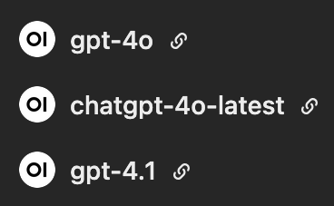

Let’s see how well ChatGPT-4o-latest and gpt-4.1 do at guessing Semantle’s word of the day!
ChatGPT-4o-latest
USER
Let’s play a game of Semantle. Guess one word at a time. Here’s the hint: The nearest word has a similarity of 72.45, the tenth-nearest has a similarity of 44.71 and the thousandth nearest word has a similarity of 20.97
ASSISTANT
Great! Let’s get started.
First guess: life
USER
Similarity Proximity 1 life 5.52 (cold)
ASSISTANT
Thanks! Based on that similarity score (5.52), “life” is quite far (cold). Let’s try something different and more abstract.
Second guess: thought
USER
16.39 (cold)
ASSISTANT
Getting warmer, but still cold.
Third guess: idea
USER
42.43 981 / 1000
ASSISTANT
Nice! That’s a big jump — we’re now in the top 1000, ranked 981st with a similarity of 42.43. That’s close to the 1000th-nearest word clue of 20.97, so we’re on the right track.
“idea” scored well, so let’s go with a similar concept.
Fourth guess: concept
USER
38.29 969 / 1000
ASSISTANT
Great — still in the top 1000, and slightly better rank than “idea”, though a little lower similarity. That suggests we’re in roughly the right semantic neighborhood.
Let’s try something closely related:
Fifth guess: notion
USER
25.39 618 / 1000
ASSISTANT
Hmm, “notion” dropped both in similarity and rank — so it’s likely a bit farther from the target than “idea” or “concept”.
Let’s pivot back toward something a bit more concrete but still related to “idea”.
Sixth guess: innovation
USER
4.29 (cold)
ASSISTANT
Oof — that was a cold one! So “innovation” took us in the wrong direction. Let’s stick closer to “idea” and “concept” but avoid moving toward business or technology.
Let’s try something more cognitive or linguistic:
Seventh guess: thoughts
USER
15.46 (cold)
ASSISTANT
Okay, “thoughts” is still quite cold — lower than “thought” and much lower than “idea”.
Maybe we should try something that captures the meaning or structure of ideas — a bit more abstract or philosophical.
Eighth guess: meaning
USER
10.54 (cold)
ASSISTANT
Yikes — even colder! “Meaning” took us further away.
Let’s pivot back to what got us closest: “idea” with 42.43. Maybe we should explore related nouns that arise from the mind but in a general or cognitive sense.
Ninth guess: mind
USER
17.98 (cold)
ASSISTANT
Still cold — not as low as “meaning,” but definitely not as warm as “idea.”
Let’s go back to words related to “idea” but focused on communication or expression rather than cognition.
Tenth guess: message
USER
21.78 170 / 1000
ASSISTANT
Nice! A solid jump — now ranked 170th with a similarity of 21.78. That’s a good improvement!
Since “message” brought us quite a bit closer, maybe we’re moving toward language, communication, or information.
Let’s keep moving in that direction.
Eleventh guess: information
USER
9.08 (cold)
ASSISTANT
Oof — “information” took us colder again. So maybe “message” was close not because of informational content, but perhaps due to interpersonal or expressive aspects.
Let’s try leaning into communication a bit differently.
Twelfth guess: statement
USER
19.26 (cold)
ASSISTANT
Still cold — “statement” didn’t help much, even though it’s somewhat related to “message.” We’re hovering below 20 again.
Let’s revisit the strongest guess so far — idea (42.43, rank 981). That word seems to connect best. Maybe more abstract or philosophical?
Thirteenth guess: belief
USER
13.04 (cold)
ASSISTANT
Still cold — “belief” isn’t getting us back on track.
Let’s return to what worked best: “idea” (42.43). That suggested something abstract but not overly philosophical or informational.
“Message” was promising too (21.78, rank 170), so perhaps something that blends abstraction with communication.
Fourteenth guess: opinion
USER
13.65 (cold)
ASSISTANT
Another cold one — “opinion” didn’t bring us any closer.
Let’s reconsider: “idea” got us closest (42.43), and “concept” wasn’t too far off (38.29). These are abstract notions. “Message” (21.78, rank 170) was also helpful. So the theme might relate to symbolic or representational entities.
Let’s try something central to mental and symbolic constructs:
Fifteenth guess: symbol
USER
6.61 (cold)
ASSISTANT
Ouch — “symbol” is cold too!
Let’s take stock:
- Best guess: idea (42.43, 981 / 1000)
- Followed by: concept (38.29), then message (21.78, 170 / 1000)
- Direction to avoid: words like belief, symbol, opinion, mind, and meaning
Since “idea” and “concept” worked best, let’s try a word in that same family that might reflect general or broad thinking — maybe something like a category or area of thought.
Sixteenth guess: theory
USER
22.77 336 / 1000
ASSISTANT
Nice! We’re back on track — “theory” has a similarity of 22.77 and ranks 336th, which is better than most recent guesses and getting warmer again.
So our best trajectory seems to be:
- idea (42.43, rank 981) — best
- concept (38.29)
- theory (22.77, rank 336)
- message (21.78, rank 170)
This suggests the target word is likely abstract, related to thought structures like “idea” and “concept,” possibly academic or philosophical.
Let’s try…
Seventeenth guess: notion (already tried — 25.39)
Hmm, how about:
Seventeenth guess: hypothesis
USER
18.70 (cold)
ASSISTANT
Alright, “hypothesis” got us colder again — so we may have gone too deep into the scientific direction. That suggests the target probably isn’t overly academic or technical.
Let’s refocus on more general abstract nouns like “idea,” which remains the top guess (42.43). “Concept” and “message” were also decent.
These hint at something mental, abstract, possibly communicative — but not overly philosophical or scientific.
Let’s try:
Eighteenth guess: thought — already guessed (16.39)
How about:
Eighteenth guess: plan
Correctly guessed Semantle word of the day: plan
gpt-4.1
USER
Let’s play a game of Semantle. Guess one word at a time. Here’s the hint: The nearest word has a similarity of 72.45, the tenth-nearest has a similarity of 44.71 and the thousandth nearest word has a similarity of 20.97
ASSISTANT
Great! For my first guess, I’ll start with a broad and common word:
animal
USER
Guess Similarity Proximity 1 animal 5.86 (cold)
ASSISTANT
Thanks! My second guess is:
object
USER
8.18 (cold)
ASSISTANT
Alright, given the numbers, let’s try something more abstract:
person
USER
8.42 (cold)
ASSISTANT
Still cold! Let’s try something else:
plant
USER
13.62 (cold)
ASSISTANT
A bit warmer. Next guess:
tree
USER
4.72 (cold)
ASSISTANT
Hmm, colder again. Let’s try:
flower
USER
0.41 (cold)
ASSISTANT
That’s much colder! Let’s try:
bacteria
USER
9.55 (cold)
ASSISTANT
Still cold, but let’s keep going:
fungus
USER
3.72 (cold)
ASSISTANT
Going colder. Let’s try something else closer to “plant”:
grass
USER
5.28 (cold)
ASSISTANT
Still cold! Let’s try:
leaf
USER
6.13 (cold)
ASSISTANT
Still cold. How about:
seed
USER
1.60 (cold)
ASSISTANT
Very cold! Let’s shift directions and try:
water
USER
10.72 (cold)
ASSISTANT
Still cold! Since “plant” warmed up a bit, but the rest didn’t, let’s try something broader in the natural category:
nature
USER
9.61 (cold)
ASSISTANT
Still cold! Let me try something else in the realm of living things:
insect
USER
4.52 (cold)
ASSISTANT
Still cold! Let’s try something more environmental:
forest
USER
12.42 (cold)
ASSISTANT
That’s a little warmer. Let’s try:
soil
USER
8.00 (cold)
ASSISTANT
Not much warmer. Let’s try:
ecosystem
USER
15.72 (cold)
ASSISTANT
That’s noticeably warmer! Let’s try:
habitat
USER
17.96 (cold)
ASSISTANT
Getting warmer! Let’s try:
environment
USER
13.83 (cold)
ASSISTANT
A bit colder again. Let’s try:
biome
USER
9.15 (cold)
ASSISTANT
Biome wasn’t warmer. Let’s try:
community
USER
18.63 (cold)
ASSISTANT
That’s slightly warmer! Let’s try:
population
USER
18.47 (cold)
ASSISTANT
Very close to “community”! Let’s try:
species
USER
4.64 (cold)
ASSISTANT
Much colder. It seems “community” and “population” are good directions.
Next guess:
group
USER
19.58 (cold)
ASSISTANT
Getting warmer! Let’s try:
society
USER
2.05 (cold)
ASSISTANT
Much colder! Let’s stick with “community,” “population,” and “group” as the warmer direction.
Next guess:
collective
USER
6.25 (cold)
ASSISTANT
Still cold. Let’s try something in the organizational or structural sense:
cluster
USER
7.19 (cold)
ASSISTANT
Still cold. Let’s try:
assembly
USER
6.12 (cold)
ASSISTANT
Still cold! Since “group” and “community” were warmer, maybe:
aggregation
USER
2.24 (cold)
ASSISTANT
Very cold! Let’s try another approach related to populations and communities:
network
USER
18.30 (cold)
ASSISTANT
That’s quite warm! Let’s keep going in that direction.
system
USER
32.95 921 / 1000
ASSISTANT
Wow, that’s much warmer—now in the top 1000! Let’s try:
structure
USER
27.47 747 / 1000
ASSISTANT
A bit colder than “system,” but still in the right area. Let’s try:
organization
USER
12.42 (cold)
ASSISTANT
That’s much colder again. Let’s try a word close to “system” and “network”:
process
USER
24.27 527 / 1000
ASSISTANT
“Process” is still warm, but not as hot as “system.” Let’s try:
mechanism
USER
26.87 714 / 1000
ASSISTANT
Getting warmer again! Let’s try:
machine
USER
3.02 (cold)
ASSISTANT
That’s much colder! Since “system” is our hottest guess, let’s try:
framework
USER
29.49 821 / 1000
ASSISTANT
Very close to “system”! Let’s try:
model
USER
22.95 357 / 1000
ASSISTANT
Still warm, but not as close as “system” or “framework.”
Let’s try:
schema
USER
13.31 (cold)
ASSISTANT
That’s colder again. Let’s try another word close to “system” and “framework”:
infrastructure
USER
29.42 818 / 1000
ASSISTANT
Very close! Let’s try:
platform
USER
15.01 (cold)
ASSISTANT
Much colder! Let’s circle back to the warmest so far: system, framework, infrastructure.
Next guess:
architecture
USER
15.49 (cold)
ASSISTANT
Still cold! Since “system,” “framework,” and “infrastructure” are very close, let’s try:
networking
USER
4.49 (cold)
ASSISTANT
That’s much colder! Let’s focus back on the warm direction:
grid
USER
12.13 (cold)
ASSISTANT
Still cold! Let’s try another word closely related to “system,” “framework,” and “infrastructure”:
matrix
USER
12.79 (cold)
ASSISTANT
Still cold! Let’s try:
scheme
USER
46.75 991 / 1000
ASSISTANT
That’s very hot! Let’s try:
plan
Of the three GPT models available (ChatGPT-4o, -4o-latest, and gpt-4.1), ChatGPT-4o-latest was the most effective. It guessed the word in the last amount of guesses and demonstrated reasoning that suggested its guessing behavior was strategic.
In contrast, gpt-4.1, while it did eventually guess the word (in over 2x the guesses as 4o-latest), it struggled and did not seem to demonstrate strategy. It continued with a theme (nature/animals) despite consistently receiving low similarities (accuracies) on the guesses.
ChatGPT-4o’s Semantle’s guessing behaviors, as explored in other blog posts, also did not really demonstrate much strategy in guessing and tended to repeat guesses in a persistent way that the other models did not.
